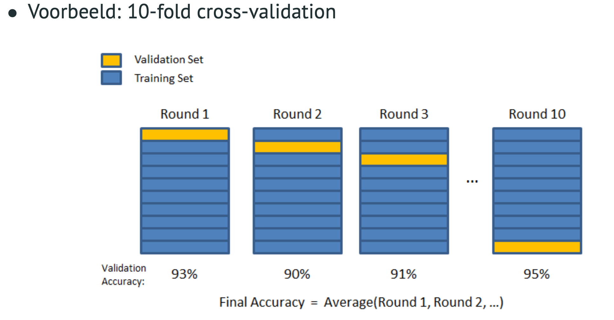

K-fold cross validation
Cross-validation is a resampling procedure used to evaluate machine learning models on a limited data sample.
The procedure has a single parameter called k that refers to the number of groups that a given data sample is to be split into.
*Voor verschillende K-waarden kan je andere resultaten krijgen dus interessant om dat ook te laten wisselen. *
Zeker gebruiken als je weining trainingsdata hebt tov het aantal features
Zoeken naar optimale hyperparameters

Nadeel : testdata voor model (hier is dat de validatiedata) lekt door in model omdat je traint op alle data.